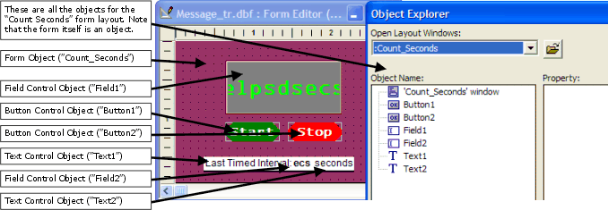
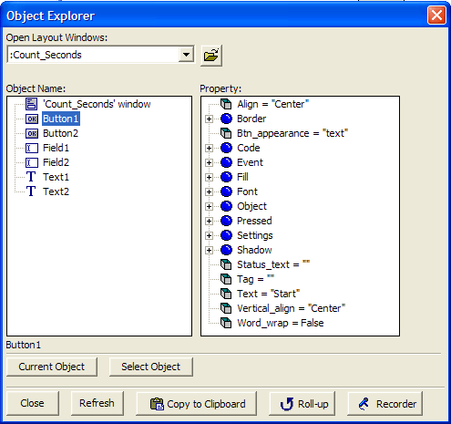
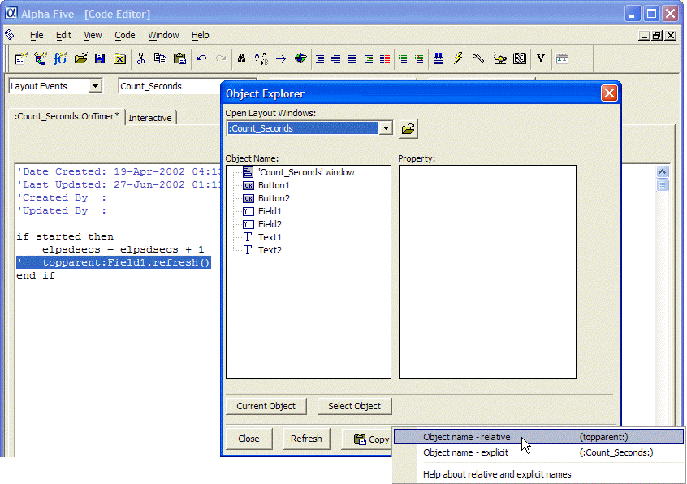

Object Aliases
An explicit object reference includes the name of a parent object or the name of the object itself. If you use Xbasic code to invoke object methods with an explicit reference, then that code is limited to use with the named object. Alpha Five provides object aliases to use in object references that make code transferable across objects without having to edit the code.
Some of these aliases are:
this : refers to the current object itself
parent : refers to the container of the current object
parentform : used in controls scripts to refer to the form that contains the controls
In the next exercise, you will examine a form with three controls and see how the form and control event scripts refer to each other using object references. You will also see how to use the <span class=Screen>Object Explorer</span> to let Alpha Five automatically build object addresses for you as you edit a layout windows scripts.
|
The Object Explorer is a tool available for use when you are editing a layout window object. The Object Explorer is launched from the View menu in a layout editor. The Object Explorer shows, for a give layout window object, all the sub-objects of that window (including the window itself) and a listing of all the characteristics of those objects. So you can see all the properties, events, and methods that exist for an object. Via the Object Explorer, you can edit the properties, see all the available methods, and invoke the Code Editor to create or edit event scripts. You can also highlight any object, property, event, or method and have the Object Explorer show you the correct absolute or relative reference to that object item. The Object Explorer window lets you identify, explore, modify, and reference objects that are part of open layout windows. So the Object Explorer can be used with Forms, Browses, Letters, Labels, etc. The Object Explorer has two main regions. In the Object Name all the objects that are part of the current open layout are listed in a tree layout (Sub or child objects, if any, are listed below each parent). The Property region lists all the properties for an object selected in the Object name region. |
Exercise 8 - Examining Object Addresses Using the Object Explorer
Open the Phone Messages database.
Display the Form tab of the Control Panel.
Double-click on the Count Seconds form.
Press Start and Stop a few times.
Press the Design button on the toolbar to switch into Form Design mode.
Select the View menu and select Object Explorer (near the bottom of the menu).
Select the "Button1" object in the Object Name region of the Object Explorer.
Right-click on Button1, the Start button (in the design mode window for the Count Seconds form, not in the Object Explorer !).
Select Events, then OnPush. Alpha Five loads the OnPush event script in the Code Editor.
This form works as follows. The form property, Timer interval in seconds is set to 1. This means that the OnTimer event executes every second while the form is running. The OnTimer event script increases the elpsdsecs variable by 1 each time it executes (which is every second according to the timer interval property setting). Button1 (Start) resets the elpsdsecs to 0, changes the Field1 control background color and refreshes the elpsdsecs variable value which is displayed by the Field1 control . Button2 (Stop) stops updating the field1 control and resets its background color. Lets look at the Xbasic scripts for these controls.
The Object Explorer window opens as shown below in Figure 30.

Figure 30
The Object Explorer shows all the objects for a given layout as seen Figure 31.

Figure 31
|
The properties for the highlighted object name appear in the Property region. You can see the properties for Button1 and compare them to the appearance of Button1 on the form. For example, the text property has a value of "Start", which is the label that appears on Button1. The alignment of the text is also aligned vertically and horizontally according to the "Center" setting for both the Align and Vertical_align properties. These properties were set when the Button1 button control object was created on the form. You are using the Object Explorer tool to 'explore' the characteristics of an existing object. |
Let us look at the OnPush event script invoked when Button1 is pushed.

Figure 32
This script resets the elpsdsecs variable to zero. Then it changes the fill color for the field1 text control object. Finally it sets the started variable to .T. or True. This variable is, in turn, checked in the OnTimer event script of the Count Seconds layout. The OnTimer event script executes every second (according to the property setting described in Step 4) and refreshes the display of seconds when the variable started is True.
A single quote mark (') at the beginning of a line indicates that line is a comment.
Click the small
 , at the top-right corner of the Code Editor,
to close it.
, at the top-right corner of the Code Editor,
to close it.Place your cursor on the background of the Count Seconds form and right-click.
Select Events, then select the OnTimer event. The OnTimer event script is displayed in the Code Editor.
Click the left mouse button once anywhere in the line of the OnTimer event script that reads:
Right-click the mouse and select Comment/Un-comment code, then select Comment out. This turns the Field1.refresh() line into a comment.
From the main window menu, select View, then select Object Explorer. The Object Explorer is displayed.
Select "Field1" in the Object Name region.
Click the Copy to Clipboard button (at the bottom of the window).
Select Object name - relative. This copies a relative object name reference to the clipboard. Now you can paste that object name reference directly into the script in place of the line you just commented out.
Click on the end of commented out line:
Right-click the mouse and select Paste. Then press Tab once. The relative reference to the Field1 object is pasted into the script. (Alpha Five automatically uses alias object references in relative reference addresses. So topparent:Field1 is equivalent to Field1.)
Now position the cursor after Field1 and type:
Click on the Save icon to save this event script and the changes you made.
Close all the open windows.
|
if started then elpsdsecs = elpsdsecs + 1 topparent:Field1.refresh() end if |
This script checks to see if the variable started is True. If it is, then the variable elpsdsecs is increased by 1 and the new value is now stored in elpsdsecs. Next, the script refreshes the Field1 text control (which displays the variable elpsdsecs ).
If started is False, then the OnTimer script does nothing.
|
Field1.refresh() |

Figure 33
|
After you copy this object reference to the clipboard it becomes available for you to easily paste it into the script you are editing in the Code Editor as you will do in Step 20. |
|
'topparent:Field.refresh() |
and press Enter. You should have a blinking insertion point on the blank line after the commented out line and before the line that reads end if.
|
.refresh() |
to complete this command line.
|
Aliases are substitute names for Alpha Five objects that allow you to use the object references as relative references instead of absolute references. The available aliases are:
In this exercise, you use the Object Explorer to select the relative reference to the object Field1. This reference is relative to the object script you are working with which is the OnTimer event of the form object. When the OnTimer event script processes the line, topparent:Field1.refresh() Alpha Five finds the Field1 object by starting at the top parent object (the Count_Seconds form object) and looking within the form for Field1. Since the top parent object is the form that contains the Field1 object the line, Field1.refresh() works just as well (and this is the original line you saw when you first opened the OnTimer event script). Using aliases is a clearer method to refer to objects and Alpha Five will always include aliases in object references copied from Object Explorer. |
Next